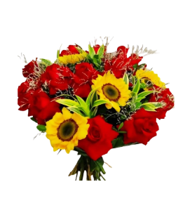
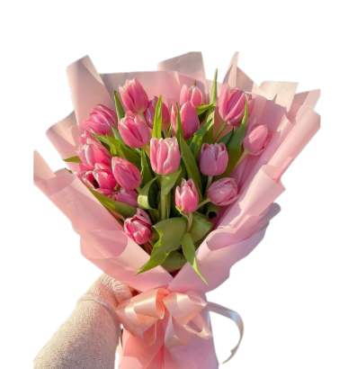
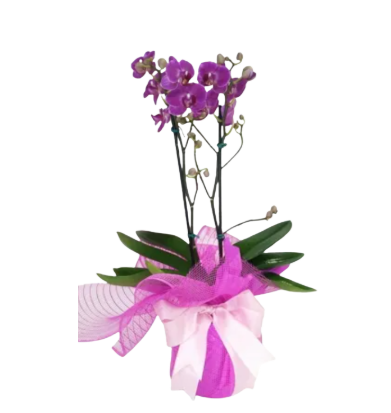
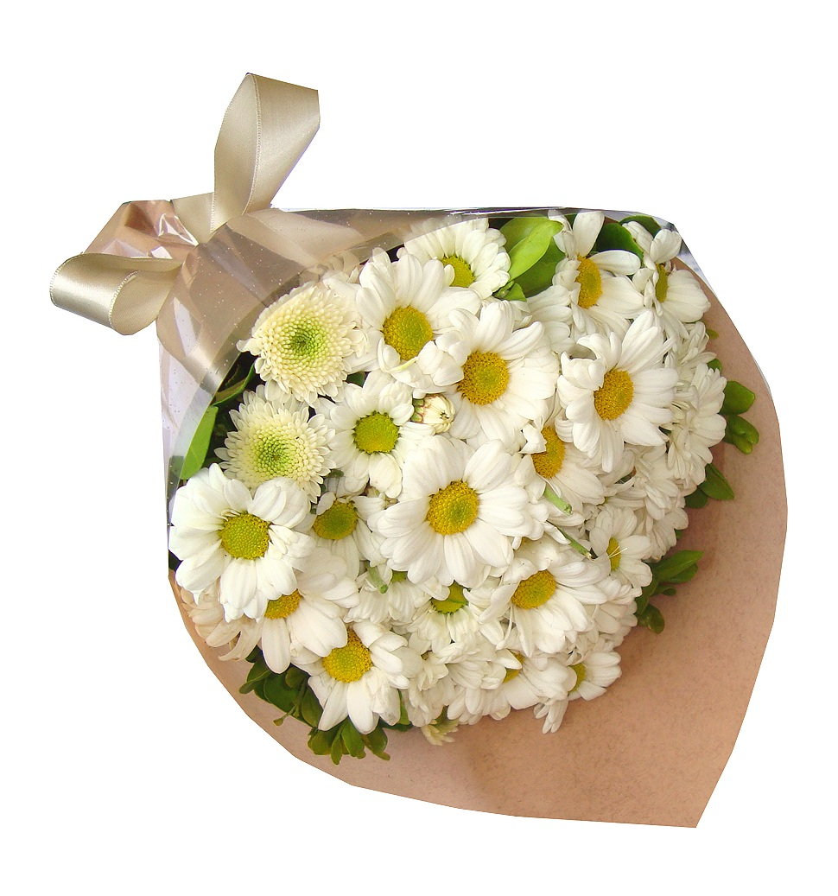

Marca: ENTRE FLORES
Dimensões: Largura: 35cm x Altura: 50cm x Diâmetro: 32cm
Peso: 1,400g
Coleção: Romance Eterno
Itens Inclusos: 12 Rosas vermelhas naturais selecionadas
Folhagens de eucalipto decorativas
Laço especial de cetim branco

Marca: ENTRE FLORES
Dimensões: Largura: 30cm x Altura: 45cm x Diâmetro: 28cm
Peso: 1,100g
Coleção: Gestos de Carinho
Itens Inclusos: Rosas naturais coloridas (vermelhas, rosa-claro, lilás e brancas)
Ramos decorativos de gipsofila (mosquetinho)
Embalagem em papel kraft texturizado
Laço de fita de cetim vermelha

Marca: ENTRE FLORES
Dimensões: Largura: 28cm x Altura: 45cm x Diâmetro: 25cm
Peso: 950g
Coleção: Sentimentos Intensos
Itens Inclusos: * 6 Rosas vermelhas carmesim de botão aberto
Ramos de folhagem verde do campo
Embalagem em papel kraft minimalista
Laço delicado de cetim branco

Marca: ENTRE FLORES
Dimensões: Largura: 38cm x Altura: 52cm x Diâmetro: 35cm
Peso: 1,600g
Coleção: Harmonia e Brisa
Itens Inclusos: * Mix de rosas em tons pastéis (rosa bebê, rosa chá e pink)
Preenchimento abundante com gipsofila (mosquetinho)
Embalagem com acabamento em papel de seda e tela decorativa
Amarrilho rústico refinado

Marca: ENTRE FLORES
Dimensões: Largura: 36cm x Altura: 48cm x Diâmetro: 32cm
Peso: 1,500g
Coleção: Pureza e Luz
Itens Inclusos: Rosas brancas premium de haste longa
Folhagens selecionadas de ruscus verde intenso
Amarrilho invisível de sustentação elegante

Marca: ENTRE FLORES
Dimensões: Largura: 32cm x Altura: 50cm x Diâmetro: 28cm
Peso: 1,200g
Coleção: Encanto Rústico
Itens Inclusos: * Rosas brancas clássicas naturais
Flores de astromélias brancas decorativas
Chuva-de-prata / Gipsofila (mosquetinho) para preenchimento
Embalagem em papel kraft rústico estampado
Laço volumoso de ráfia natural

Marca: ENTRE FLORES
Dimensões: Largura: 25cm x Altura: 45cm x Diâmetro: 22cm
Peso: 850g
Coleção: Minimalismo Silvestre
Itens Inclusos: * Botões de rosas brancas do campo
Mini margaridas e gipsofila decorativas
Base de folhagem verde escura (avenca/samambaia)
Cone de acabamento em juta natural e papel kraft
Laço delicado de ráfia

Marca: ENTRE FLORES
Dimensões: Largura: 30cm x Altura: 46cm x Diâmetro: 26cm
Peso: 1,100g
Coleção: Essência Verdejante
Itens Inclusos: * Rosas brancas em ponto de abertura ideal
Botões delicados de astromélias brancas e verdes
Folhagens lineares decorativas de lírio
Laço duplo especial de fita de cetim verde oliva e bege texturizada
Tag decorativa exclusiva da marca

Marca: ENTRE FLORES
Dimensões: Largura: 35cm x Altura: 52cm x Diâmetro: 32cm
Peso: 1,300g
Coleção: Golden Dream
Itens Inclusos: * Girassóis naturais selecionados de haste longa
Folhagens ornamentais de eucalipto miúdo
Acabamento de base com folhas verdes estruturadas
Cordão de juta rústico para amarração

Marca: ENTRE FLORES
Dimensões: Largura: 38cm x Altura: 48cm x Diâmetro: 35cm
Peso: 1,550g
Coleção: Luz da Vida
Itens Inclusos: * Arranjo denso com múltiplos girassóis naturais premium
Ramalhetes de mini gipsofilas decorativas (mosquetinho)
Folhagens arredondadas de eucalipto silver dolar
Vaso de vidro transparente moldado (estilo canelado/luxo)

Buquê de flores é uma composição floral que reúne diversas flores e folhagens, arranjadas de forma harmoniosa e estética. Ele é frequentemente utilizado para presentear em ocasiões especiais, como aniversários, casamentos, Dia das Mães, entre outros.

Buquê de flores é uma composição floral que reúne diversas flores e folhagens, arranjadas de forma harmoniosa e estética. Ele é frequentemente utilizado para presentear em ocasiões especiais, como aniversários, casamentos, Dia das Mães, entre outros.

Buquê de flores é uma composição floral que reúne diversas flores e folhagens, arranjadas de forma harmoniosa e estética. Ele é frequentemente utilizado para presentear em ocasiões especiais, como aniversários, casamentos, Dia das Mães, entre outros.

Buquê de flores é uma composição floral que reúne diversas flores e folhagens, arranjadas de forma harmoniosa e estética. Ele é frequentemente utilizado para presentear em ocasiões especiais, como aniversários, casamentos, Dia das Mães, entre outros.

Buquê de flores é uma composição floral que reúne diversas flores e folhagens, arranjadas de forma harmoniosa e estética. Ele é frequentemente utilizado para presentear em ocasiões especiais, como aniversários, casamentos, Dia das Mães, entre outros.

Buquê de flores é uma composição floral que reúne diversas flores e folhagens, arranjadas de forma harmoniosa e estética. Ele é frequentemente utilizado para presentear em ocasiões especiais, como aniversários, casamentos, Dia das Mães, entre outros.

Buquê de flores é uma composição floral que reúne diversas flores e folhagens, arranjadas de forma harmoniosa e estética. Ele é frequentemente utilizado para presentear em ocasiões especiais, como aniversários, casamentos, Dia das Mães, entre outros.

Buquê de flores é uma composição floral que reúne diversas flores e folhagens, arranjadas de forma harmoniosa e estética. Ele é frequentemente utilizado para presentear em ocasiões especiais, como aniversários, casamentos, Dia das Mães, entre outros.

Buquê de flores é uma composição floral que reúne diversas flores e folhagens, arranjadas de forma harmoniosa e estética. Ele é frequentemente utilizado para presentear em ocasiões especiais, como aniversários, casamentos, Dia das Mães, entre outros.

Buquê de flores é uma composição floral que reúne diversas flores e folhagens, arranjadas de forma harmoniosa e estética. Ele é frequentemente utilizado para presentear em ocasiões especiais, como aniversários, casamentos, Dia das Mães, entre outros.

Buquê de flores é uma composição floral que reúne diversas flores e folhagens, arranjadas de forma harmoniosa e estética. Ele é frequentemente utilizado para presentear em ocasiões especiais, como aniversários, casamentos, Dia das Mães, entre outros.

Buquê de flores é uma composição floral que reúne diversas flores e folhagens, arranjadas de forma harmoniosa e estética. Ele é frequentemente utilizado para presentear em ocasiões especiais, como aniversários, casamentos, Dia das Mães, entre outros.

Buquê de flores é uma composição floral que reúne diversas flores e folhagens, arranjadas de forma harmoniosa e estética. Ele é frequentemente utilizado para presentear em ocasiões especiais, como aniversários, casamentos, Dia das Mães, entre outros.

Buquê de flores é uma composição floral que reúne diversas flores e folhagens, arranjadas de forma harmoniosa e estética. Ele é frequentemente utilizado para presentear em ocasiões especiais, como aniversários, casamentos, Dia das Mães, entre outros.

Buquê de flores é uma composição floral que reúne diversas flores e folhagens, arranjadas de forma harmoniosa e estética. Ele é frequentemente utilizado para presentear em ocasiões especiais, como aniversários, casamentos, Dia das Mães, entre outros.

Buquê de flores é uma composição floral que reúne diversas flores e folhagens, arranjadas de forma harmoniosa e estética. Ele é frequentemente utilizado para presentear em ocasiões especiais, como aniversários, casamentos, Dia das Mães, entre outros.

Buquê de flores é uma composição floral que reúne diversas flores e folhagens, arranjadas de forma harmoniosa e estética. Ele é frequentemente utilizado para presentear em ocasiões especiais, como aniversários, casamentos, Dia das Mães, entre outros.

Buquê de flores é uma composição floral que reúne diversas flores e folhagens, arranjadas de forma harmoniosa e estética. Ele é frequentemente utilizado para presentear em ocasiões especiais, como aniversários, casamentos, Dia das Mães, entre outros.